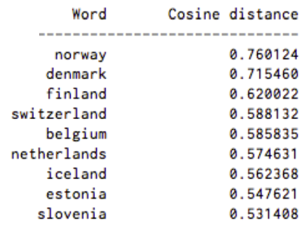
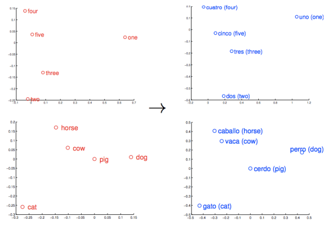
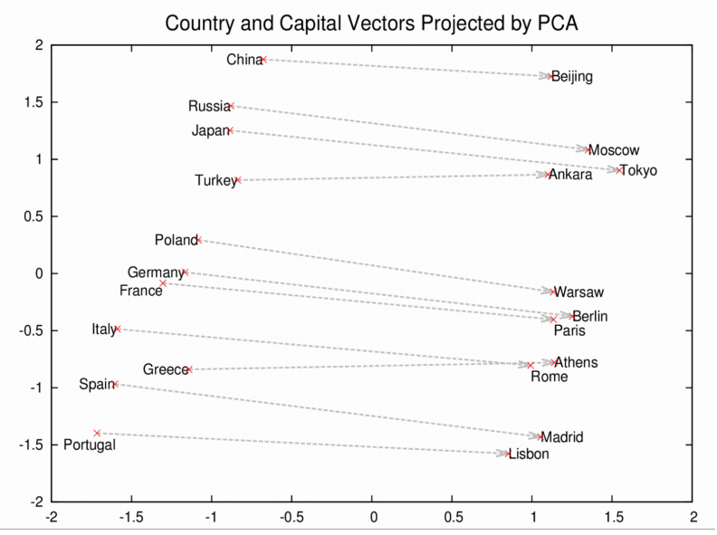

Question Answering systems are concerned with extracting information from documents, queries, and texts. Generating keywords from text and detecting keywords in text can greatly benefit these systems. Some common problems associated with QA systems include the following
Most of the world's information is unstructured. Examples of this include books, encyclopedic websites, forums, and news articles. While humans are able to understand and extract information from these sources easily, this is a difficult problem for computers, and not being able to process these documents hinders the ability for our computational systems and software to use this unstructured data. Information extraction techniques allow us to extract structured information from unstructured text so that computational systems can understand and use it better.
Although Watson is able to "understand" unstructured text in a way, many systems are not able to do so, and in other cases, it's much easier to process structured text (for example, generating lists, tables, and doing data analysis).
An alternative to NLP-heavy systems like Watson is creating a database (in many cases, a domain-specific database such as one related to medical topics) and creating an interface with which users can query the system. This interface can be used with NLP technology to allow users to query it with natural language, but there is an underlying structured database. An example of this is Google's Knowledge Graph. KG was developed from Freebase, discussed later in this page. Google allows you to perform a query such as, "How tall is Obama?", and their NLP technology plus KG will be able to give the user an answer in natural language.
Named entity recognition is used to identify which tokens in text could be grounded as entities which are part of world knowledge (for example, country names, dates, and peoples' names). These can be used not only to create the basis for a database (one entry per entity), but also for easier processing of unstructured text. Once a system is relatively sure of which tokens indicate named entities, it can more easily process the relations between the entities. Two techniques to named entity recognition are sequence modeling and grammar-based techniques.
Many named entities fit patterns which are easy to find in text. For example, most proper nouns start with a capital letter (and for every word in the noun phrase, all words are capitalized, with a few exceptions). It is less computationally expensive to write a script which identifies tokens in a document matching a certain pattern (e.g. capitalized or near a word like "Inc."), but is more time-intensive on the person constructing the patterns, because many examples need to be looked at and lots of generalizations need to be made.
Sequence modeling is a more general technique used to learn and predict things about/given the sequence of tokens in a document. Another application of sequence modeling is part of speech tagging. One fairly simple sequence model is a hidden Markov model.

In the image above, the bottom nodes x are hidden nodes. The top nodes y are observed. In the named entity recognition task, one can think of the observed nodes as the tokens in a sentence, and the hidden nodes as the named entity tags. The program building and performing inference on a hidden Markov model will define a tag set for the possible hidden NER tags. For example, they might have a tag no entity, and for each kind of named entity tag (person, location, date, etc.), they will have a begin and continue tag to indicate the location of the entity (and also be able to deal with entities next to one another).
In the diagram, you can see that arrows point from each named entity tag, and each named entity tag is directed towards one token. This is a way of denoting that each internal state (named entity tag) is dependent on the previous state, and each token is dependent on the hidden tag at that index.
This may seem a little odd, because there is one probability distribution over the whole token vocabulary for each named entity tag. It's supposing that you are able to predict a most likely token given that you know it's, for example, not a named entity. The conditional random field approach is another sequence modeling approach which doesn't use this assumption, and can perform better on some tasks. But the hidden Markov model approach is able to achieve high accuracies for some tasks.
A hidden Markov model is built by counting word and tag frequencies. At the minimum, it must know probabilities of transitioning from one tag to another (in which you could learn a pattern such as "place names usually have more than one token in them"), and it also must know the probabilities of a word being a particular token given that you know its tag. These both can be found by counting words and named entity tags (requiring that we have a dataset of documents in which each word is tagged as a part of speech).
Inference is performed on hidden Markov models using the Viterbi algorithm. This is a functional programming algorithm in that it performs the same computation for each iteration (each token), but reuses computations from earlier indices. It finds the probability of the most probable tag sequence for the document. A backpropogation table allows the program to find what that most probable sequence is.
Once named entities are found, relational databases can be found and built using the entities and the context in which they appear. For example, some sentences in the text might indicate who is the leader of some country. The goal of relation extraction is, once we know which tokens refer to what entities, to find how they are related by using unstructured text. There are a few more approaches to relation extraction.
Like in named entity recognition, we could use grammar-based techniques and supervised learning. Grammar-based techniques are a little easier because it might be possible to find simple patterns which cover a lot of examples of a certain relation. However, these rules are very tough to generalize. In addition, supervised learning is more difficult with relation extraction than with NER, because it's most intensive to annotate, and because the sentence features will be a little more complicated (over the entire sentence, its n-grams, and where the entities occur, rather than just short sequences of words).
In addition to grammar-based or supervised techniques, there are several semi- or unsupervised learning techniques which can be used for relation extraction. One semi-supervised approach is starting with just a few example annotated sentences and using them to build a larger system. A drawback to this approach is that if the system gets off track even a little bit (i.e. if it makes a mistake, doesn't realize it, and then makes decisions assuming that the mistake is true), it could produce very odd results.
Another approach is using previously-constructed databases. This is especially useful when trying to expand these databases. Two such databases are Freebase and Wikipedia (its information boxes). Given a set of known facts (relations) in these databases, and a set of new unannotated sentences, we could generate training data for a relation extractor by labeling sentences containing two entities in a relation as having that relation. For example, if we know that Obama is the president of the US, then we will assume any sentences mentioning both express that relation. Of course, this assumption isn't always true and there might be a lot of false positives, but it does allow us to find new rules or conditions which we might not have thought of as expressing a particular relation.
Many question answering systems look for answers in documents from the web or books. Knowing the contents or class of the document would likely be helpful in building the system. Reversely, knowing which documents are of a certain class could dramatically narrow the search space for documents containing the answer. We will refer to assigning a class or keyword as classifying the document. Ranking documents from a corpus most relevant to a keyword is called document filtering. Note both doucment classification and filtering make use of classifiers as we will explain.

A simple approach to assinging a class to a document is to assign it to the most frequent word occuring in the document. Called bag-of-words model, it can produce a keyword in the general domain of the document once stemming words and common words, stop words, are removed. A more domain - in our case the document corpus - sensitive keyword might result from chossing the word with the highest tf-idf value in the document. Using tf-idf instead of bag-of-words, will result in keywords that are less frequent across the domain and more unique to the document.

More advanced techinques to assign keywords to documents use classifiers. Classifiers can take a set of labeled training data, documents with known keywords, and classify new doucments based on a model it creates from the training data. Common classifiers used in document classification are K-nearest neighbors, decision trees, naive bayes, SVM, etc. Classifiers however, create models based on vector representations of the documents. Ideally, once trained, the model should classify a document with a similar feature vector to a training example as the same class as the training example. K-nearest neighbors classifier would assign a keyword to a doucment based on the k nearest documents' keywords.

To see an interesting implementation of k-nearest neighbors to classify hand-written digits checkout Burton DeWilde's example
Feature vectors can be any combination of word frequency counts, tf-idf values, n-gram counts, etc. Basically anything that describes the contents and context of the document is likely a good candidate for a feature in the feature vector. One common feature that captures some context, is the n-grams model. The n-grams model counts the number of times n sequence of words occurs in the document. Comparing phrases in documents is an easy way to represent order dependent data and involve distributional semantics.

A simple approach to ranking documents from a corpus based on a keyword is to pick the document in which the keyword appears most frequent or has the highest tf-idf value. This approach would seem to have some success, as long as the keyword lies in the text. If keywords for the document aren't directly in the text, then training a classifier with a labeled set of data could be a solution. A set of example keyword and corresponding highest document rankings is needed. So far we have only classified feature vectors from texts where the features only extract basic semantics -- up to the second level on the chart below. To improve the keyword to document ranking more semantic information should be considered. Especially if keyword misspelling must be considered, such is the case with search engine queries.

Checkout how Microsoft applies machine learning to retrieve documents for search engine queries example
Due to the decentralized evolution of natural languages, the use of words and phrases that have the same or roughly similar meanings, is common in everyday speech and text. For computers to process natural language, they need to have some means by which to recognize when words are similar in meaning. This allows systems to process distinct sentences with identical meaning correctly, and results in language processing which more accurately reflects how humans use and understand language.
Training Watson for a given corpus is an arduous task. Since the system cannot inherently know every query that is similar in meaning but different in representation, the team in charge of training must explicitly specify questions as similar questions until it has enough information to start drawing its own correct connections. This requires a significant amount of effort, and will still potentially miss a number of possible phrasings for a given question.
If a computer system could be better trained to identify synonyms and other syntactical changes that result in sentences which are distinct but have similar meaning, a large portion of this training could be automated. This concept is already to some extent integrated into IBM Watson (http://www.icsi.berkeley.edu/icsi/sites/default/files/events/talk_20121109_gliozzo.pdf). This would lessen the amount of work developers have to do in training their systems.
In addition to rewriting queries for training systems, query rewriting can be applied to queries used in active QA systems. Suppose for example that a user asks "Who leads the United States". If the system has only a document which refers to the president without mentioning the term "lead", the ability to somehow infer that the query is related to "Who is the president of the United States" becomes crucial to the system's success. IBM Watson uses this technology to quickly form connections between new knowledge-bases using information it has already digested (http://www.icsi.berkeley.edu/icsi/sites/default/files/events/talk_20121109_gliozzo.pdf).
Successful query rewriting requires more than a database of synonyms and simple pattern matching to achieve human levels of detail. For instance, there are multiple varieties of words we can use when we consider potential query rewrite schemes. Examples include...
Words which can be substituted for each-other without modifying the overall meaning of the sentence in which they appear. Example: cat/feline.
Words and phrases which are commonly used in place of other words, deriving from some attribute associated with the concept being represented. Example: red tape/bureaucracy
Variations on words dependent on tense, mood, voice, and cardinality. Example: ran/run/running.
A lexical database called Wordnet can be used to store and query true synonyms and conjugates. While we can do a simple search and replace algorithm for iterating over true synonyms, more intensive methods are needed to handle the other possible rewrites. For instance, if we were to change a conjugate, the rest of the sentence would also need to change to retain syntactic correctness.
Distributional semantics is a research field that attempts to relate how the frequency and locations of a word or phrase within large sample sets can be used to understand its meaning. The field is based on a theory known as the Distributional Hypothesis (created by Zellig Harris [1] and popularized by J.R. Firth), which states that words used in the same contexts tend to have similar meanings. Following this assumption, we can imagine that if we had a large enough collection of well distributed data, the meaning of any word could be derived given it occurs in the context of another word whose meaning is already known. This concept has been applied as a possible explanation for how children learn language, in addition to its applications in computer science research [2]. While the hypothesis is not proven, it has been shown to be useful in practice.
One concept derived from the Distributional Hypothesis is the idea of semantic distance. That is, since words which appear in similar contexts are assumed to have similar meanings, we can measure the similarity of their contexts to quantify just how similar their meanings might be. Through this quantification we arrive at "word vectors" which have a number of interesting properties that will be discussed later on this page.
Word2Vec is a collection of processes used to estimate properties of distributional semantics. It uses bag-of-words or skip-grams in conjunction with a two layer neural-network to create embeddings of words into a semantic space. This allows the construction of models for distributional semantics which can be updated on-the-fly by simply training the model on new data. Using word embeddings as the word vectors previously mentioned, we can easily estimate information about semantic distance.
With Word2Vec, estimating semantic distance and comparing the distance between vectors is easy. Vectors with similar distance are assumed to have similar meaning, by the distributional hypothesis. In this example, countries closely related to Sweden were found without the use of explicit geographic representation.
Word vectors can be used to estimate word translation between languages, because given a large corpus, the word vectors for a word in one language will be very similar to an equivalent word in another. This does not maintain grammatical properties, but can give rough estimates of meaning in some instances.
Similarity between concepts can be established and used, even if their words are not transparently similar. Seen below, the idea of a capital city is represented by finding the vector from one country to its capital and applied to estimate the capitals of other countries.
If you're interested in trying Word2Vec or just want to see some source code, check out these implementations in a variety of languages.
| Language | Homepage |
|---|---|
| C | https://code.google.com/archive/p/word2vec/ |
| Java | http://deeplearning4j.org/word2vec.html |
| Python | http://radimrehurek.com/gensim/ |